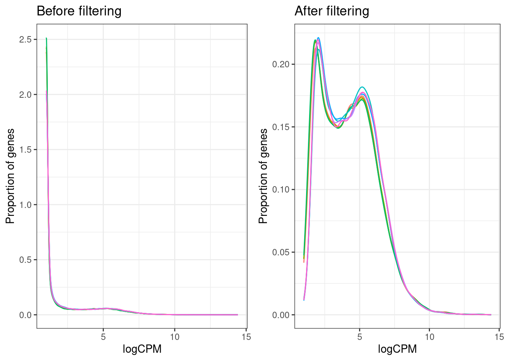
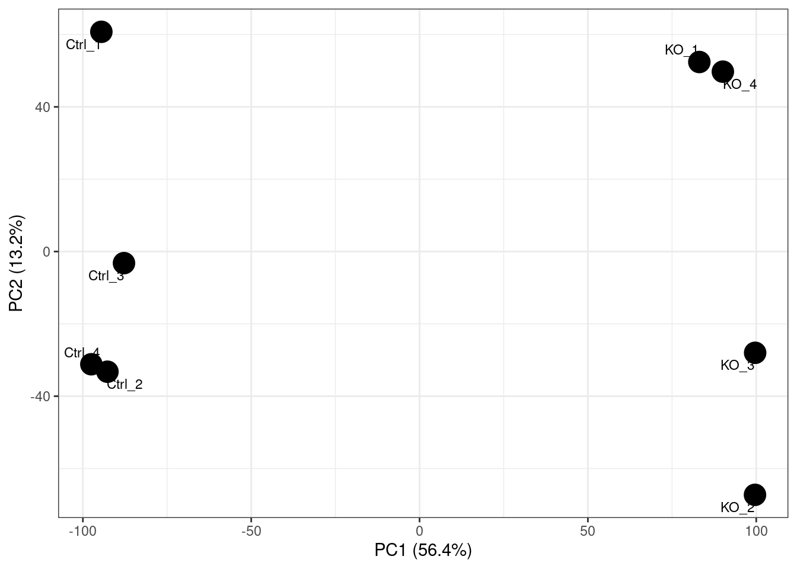
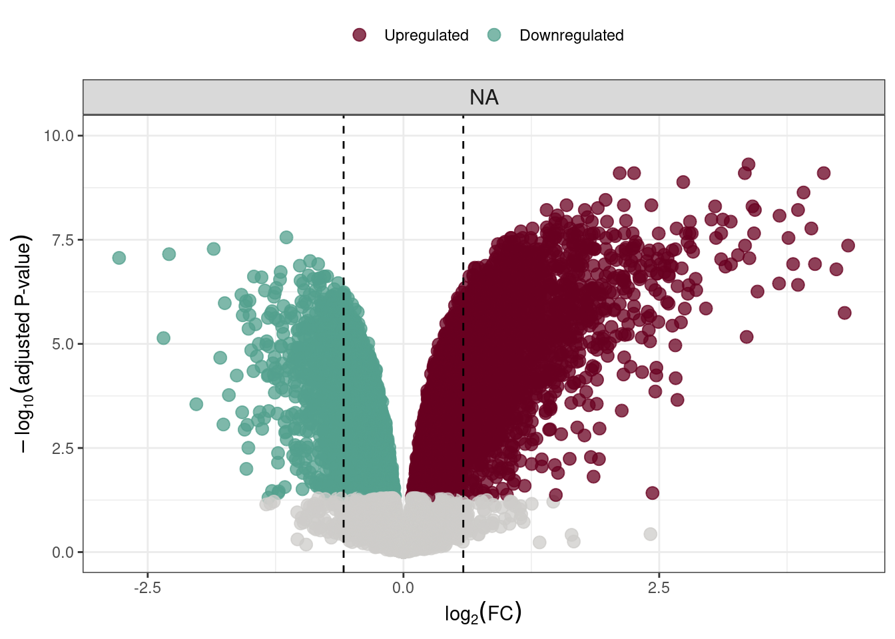

Last updated: 2026-07-15
Checks: 6 1
Knit directory: NMD-analysis/
This reproducible R Markdown analysis was created with workflowr (version 1.7.2). The Checks tab describes the reproducibility checks that were applied when the results were created. The Past versions tab lists the development history.
The R Markdown is untracked by Git. To know which version of the R
Markdown file created these results, you’ll want to first commit it to
the Git repo. If you’re still working on the analysis, you can ignore
this warning. When you’re finished, you can run
wflow_publish to commit the R Markdown file and build the
HTML.
Great job! The global environment was empty. Objects defined in the global environment can affect the analysis in your R Markdown file in unknown ways. For reproduciblity it’s best to always run the code in an empty environment.
The command set.seed(20230314) was run prior to running
the code in the R Markdown file. Setting a seed ensures that any results
that rely on randomness, e.g. subsampling or permutations, are
reproducible.
Great job! Recording the operating system, R version, and package versions is critical for reproducibility.
Nice! There were no cached chunks for this analysis, so you can be confident that you successfully produced the results during this run.
Great job! Using relative paths to the files within your workflowr project makes it easier to run your code on other machines.
Great! You are using Git for version control. Tracking code development and connecting the code version to the results is critical for reproducibility.
The results in this page were generated with repository version f0433c0. See the Past versions tab to see a history of the changes made to the R Markdown and HTML files.
Note that you need to be careful to ensure that all relevant files for
the analysis have been committed to Git prior to generating the results
(you can use wflow_publish or
wflow_git_commit). workflowr only checks the R Markdown
file, but you know if there are other scripts or data files that it
depends on. Below is the status of the Git repository when the results
were generated:
Ignored files:
Ignored: .Rhistory
Ignored: .Rproj.user/
Ignored: analysis/Differential-transcript-expression.nb.html
Ignored: analysis/Enichment-analysis-fgsea.nb.html
Ignored: analysis/Publication-Main-figures.nb.html
Ignored: analysis/figure/
Ignored: archive/
Ignored: code/external_code/out/
Ignored: code/external_code/tmp/
Ignored: data/fastq/
Ignored: data/fastqc/
Ignored: data/genewalk/
Ignored: output/
Ignored: tmp/
Untracked files:
Untracked: analysis/Edison_work.Rmd
Untracked: data/Upf2/
Unstaged changes:
Modified: .gitignore
Modified: Rplots.pdf
Modified: analysis/DEG-analysis.Rmd
Modified: analysis/Differential-transcript-expression.Rmd
Deleted: analysis/Differential-transcript-usage.Rmd
Modified: analysis/Enichment-analysis-fgsea.Rmd
Modified: analysis/Publication-Main-figures.Rmd
Modified: analysis/Publication-Supplementary-Figures.Rmd
Note that any generated files, e.g. HTML, png, CSS, etc., are not included in this status report because it is ok for generated content to have uncommitted changes.
There are no past versions. Publish this analysis with
wflow_publish() to start tracking its development.
library(tximport)
library(edgeR)Loading required package: limmalibrary(limma)
library(EnsDb.Mmusculus.v79)Loading required package: ensembldbLoading required package: BiocGenericsLoading required package: generics
Attaching package: 'generics'The following objects are masked from 'package:base':
as.difftime, as.factor, as.ordered, intersect, is.element, setdiff,
setequal, union
Attaching package: 'BiocGenerics'The following object is masked from 'package:limma':
plotMAThe following objects are masked from 'package:stats':
IQR, mad, sd, var, xtabsThe following objects are masked from 'package:base':
anyDuplicated, aperm, append, as.data.frame, basename, cbind,
colnames, dirname, do.call, duplicated, eval, evalq, Filter, Find,
get, grep, grepl, is.unsorted, lapply, Map, mapply, match, mget,
order, paste, pmax, pmax.int, pmin, pmin.int, Position, rank,
rbind, Reduce, rownames, sapply, saveRDS, table, tapply, unique,
unsplit, which.max, which.minLoading required package: GenomicRangesLoading required package: stats4Loading required package: S4Vectors
Attaching package: 'S4Vectors'The following object is masked from 'package:utils':
findMatchesThe following objects are masked from 'package:base':
expand.grid, I, unnameLoading required package: IRangesLoading required package: SeqinfoLoading required package: GenomicFeaturesLoading required package: AnnotationDbiLoading required package: BiobaseWelcome to Bioconductor
Vignettes contain introductory material; view with
'browseVignettes()'. To cite Bioconductor, see
'citation("Biobase")', and for packages 'citation("pkgname")'.Loading required package: AnnotationFilter
Attaching package: 'ensembldb'The following object is masked from 'package:stats':
filterlibrary(org.Mm.eg.db)library(tidyverse)── Attaching core tidyverse packages ──────────────────────── tidyverse 2.0.0 ──
✔ dplyr 1.2.1 ✔ readr 2.2.0
✔ forcats 1.0.1 ✔ stringr 1.6.0
✔ ggplot2 4.0.3 ✔ tibble 3.3.1
✔ lubridate 1.9.5 ✔ tidyr 1.3.2
✔ purrr 1.2.2 ── Conflicts ────────────────────────────────────────── tidyverse_conflicts() ──
✖ lubridate::%within%() masks IRanges::%within%()
✖ dplyr::collapse() masks IRanges::collapse()
✖ dplyr::combine() masks Biobase::combine(), BiocGenerics::combine()
✖ dplyr::desc() masks IRanges::desc()
✖ tidyr::expand() masks S4Vectors::expand()
✖ dplyr::filter() masks ensembldb::filter(), stats::filter()
✖ dplyr::first() masks S4Vectors::first()
✖ dplyr::lag() masks stats::lag()
✖ ggplot2::Position() masks BiocGenerics::Position(), base::Position()
✖ purrr::reduce() masks GenomicRanges::reduce(), IRanges::reduce()
✖ dplyr::rename() masks S4Vectors::rename()
✖ lubridate::second() masks S4Vectors::second()
✖ lubridate::second<-() masks S4Vectors::second<-()
✖ dplyr::select() masks ensembldb::select(), AnnotationDbi::select()
✖ dplyr::slice() masks IRanges::slice()
ℹ Use the conflicted package (<http://conflicted.r-lib.org/>) to force all conflicts to become errorslibrary(magrittr)
Attaching package: 'magrittr'
The following object is masked from 'package:purrr':
set_names
The following object is masked from 'package:tidyr':
extract
The following object is masked from 'package:AnnotationFilter':
not
The following object is masked from 'package:GenomicRanges':
subtractlibrary(scales)
Attaching package: 'scales'
The following object is masked from 'package:purrr':
discard
The following object is masked from 'package:readr':
col_factorlibrary(reshape2)
Attaching package: 'reshape2'
The following object is masked from 'package:tidyr':
smithslibrary(gridExtra)
Attaching package: 'gridExtra'
The following object is masked from 'package:dplyr':
combine
The following object is masked from 'package:Biobase':
combine
The following object is masked from 'package:BiocGenerics':
combinelibrary(pheatmap)
library(tibble)
library(dplyr)
library(tidyr)
source(here::here("code/plots.R"))
source(here::here("code/functions.R"))
source(here::here("code/libraries.R"))
upf2_matrix = read_xlsx(here::here("data/Upf2/GSE295221_TPM_CPM.xlsx")) %>%
as.data.frame() %>%
column_to_rownames("gene_name")
keep <- (rowSums(upf2_matrix >= 1) >= 4)
genes_filtered <- upf2_matrix [keep, ] %>%
as.data.frame() %>%
rownames_to_column("geneID") %>%
mutate(geneName = mapIds(org.Mm.eg.db, keys = .$geneID,
column = "SYMBOL", keytype = "ENSEMBL",
multiVals = "first")) %>%
drop_na(geneName) %>%
column_to_rownames("geneID") %>%
dplyr::select(-geneName)'select()' returned 1:many mapping between keys and columnsexp_den <- upf2_matrix %>%
cpm(log = TRUE) %>%
reshape2::melt() %>%
dplyr::filter(is.finite(value)) %>%
ggplot(aes(x = value, color = as.character(Var2))) +
geom_density() +
ggtitle("Before filtering") +
labs(x = "logCPM", y = "Proportion of genes") +
theme_bw() +
theme(legend.position = "none")
exp_den_filt <- upf2_matrix %>%
cpm(log = TRUE) %>%
magrittr::extract(keep, ) %>%
reshape2::melt() %>%
dplyr::filter(is.finite(value)) %>%
ggplot(aes(x = value, color = as.character(Var2))) +
geom_density() +
ggtitle("After filtering") +
labs(x = "logCPM", y = "Proportion of genes") +
theme_bw() +
theme(legend.position = "none")
grid.arrange(exp_den, exp_den_filt, ncol = 2)
pca <- log2(upf2_matrix[keep, ] + 10^-6) %>%
t() %>%
prcomp(scale = TRUE)
pcaVars <- percent_format(0.1)(summary(pca)$importance["Proportion of Variance", ])
gene_pca <- pca$x[, 1:2] %>%
as.data.frame() %>%
rownames_to_column("sample") %>% # keep sample names before tibble drops them
as_tibble() %>%
ggplot(aes(PC1, PC2, label = sample)) +
geom_point(size = 6) +
geom_text_repel(size = 3, max.overlaps = Inf) +
theme_bw() +
scale_shape_manual(values = c(0, 16)) +
labs(
x = paste0("PC1 (", pcaVars[["PC1"]], ")"),
y = paste0("PC2 (", pcaVars[["PC2"]], ")")
)
gene_pca
y <- DGEList(genes_filtered)
library(GEOquery)Setting options('download.file.method.GEOquery'='auto')Setting options('GEOquery.inmemory.gpl'=FALSE)gse <- getGEO("GSE295221", GSEMatrix = TRUE)[[1]]Found 1 file(s)GSE295221_series_matrix.txt.gzmeta <- pData(gse)meta <- meta %>%
mutate(
sampleid = str_remove(str_trim(description), "^Library name:\\s*"),
condition = if_else(str_detect(sampleid, "^KO"), "KO", "Ctrl")) %>%
rownames_to_column("random") %>%
dplyr::select(sampleid, condition) %>%
column_to_rownames("sampleid")
design <- model.matrix(~0+condition, data = meta) %>%
set_colnames(gsub(pattern = "condition", replacement ="", x = colnames(.)))
contrasts <- makeContrasts(levels = colnames(design),
KO_vs_Control = KO - Ctrl)
y <- calcNormFactors(y)calcNormFactors has been renamed to normLibSizesv <- voom(y, design)
fit = lmFit(v, design) %>%
contrasts.fit(contrasts) %>%
eBayes()
summary(decideTests(fit, lfc = 1)) KO_vs_Control
Down 129
NotSig 13733
Up 1026res <- colnames(contrasts) %>%
lapply(function(x) {
topTable(fit, coef = x, number = Inf) %>%
mutate(contrast = as.character(x)) %>%
as.data.frame() %>%
rownames_to_column("EnsID") %>%
mutate(
gene = mapIds(org.Mm.eg.db, keys = EnsID, column = "SYMBOL",
keytype = "ENSEMBL", multiVals = "first")
)
})'select()' returned 1:many mapping between keys and columnsnames(res) <- colnames(contrasts)
results <- decideTests(fit, p.value = 0.05, adjust.method = "fdr",
method = "global", lfc = 1)
limma_results <- write_fit(fit, results = results, adjust = "fdr") %>%
rownames_to_column("ensembl_gene_id") %>%
mutate(
gene = mapIds(org.Mm.eg.db, keys = ensembl_gene_id, column = "SYMBOL",
keytype = "ENSEMBL", multiVals = "first")
) %>%
drop_na(gene)'select()' returned 1:many mapping between keys and columnsDEColours <- c("Downregulated" = "#53A08E", "Upregulated" = "#690020", "Not Sig" = "#CECCCA")
df <- res$KO_vs_Control %>%
mutate(Result = ifelse(adj.P.Val < 0.05 & logFC > 0, "Upregulated",
ifelse(adj.P.Val < 0.05 & logFC < 0, "Downregulated", "Not Sig")))
contrast_labeller <- as_labeller(c(
"UPF3B_vs_Control" = "italic(Upf3b)~'KD DEGs'",
"UPF3A_vs_Control" = "italic(Upf3a)~'KD DEGs'",
"DoubleKD_vs_Control" = "italic(Upf3)~'dKD DEGs'",
"UPF3A_OE_UPF3B_KD_vs_Control" = "italic(Upf3a)~'OE'~italic(Upf3b)~'KD DEGs'"
), label_parsed)
deg_volcano_plot <- df %>%
ggplot(aes(x = logFC, y = -log10(adj.P.Val), colour = Result)) +
geom_point(alpha = 0.75, size = 3) +
scale_colour_manual(values = DEColours, breaks = c("Upregulated", "Downregulated"), drop = TRUE) +
xlab(bquote(log["2"](FC))) +
ylab(bquote(-log["10"]("adjusted P-value"))) +
geom_vline(xintercept = c(-log2(1.5), log2(1.5)), linetype = "dashed") +
ylim(0, 10) +
facet_grid(~contrast, scales = "free_x", labeller = contrast_labeller) +
theme_bw() +
theme(
legend.position = "top",
legend.title = element_blank(),
strip.text = element_text(size = 12)
)
deg_volcano_plot Warning: Removed 1 row containing missing values or values outside the scale range
(`geom_point()`).
res <- topTable(fit, coef = "KO_vs_Control", number = Inf, sort.by = "P") %>%
rownames_to_column("gene") %>%
as_tibble() %>%
mutate(Result = ifelse(adj.P.Val < 0.05 & logFC > 1, "Upregulated",
ifelse(adj.P.Val < 0.05 & logFC < -1, "Downregulated", "Not Sig")))
universe_genes <- res$gene
up_genes <- res %>% dplyr::filter(Result == "Upregulated") %>% pull(gene)
down_genes <- res %>% dplyr::filter(Result == "Downregulated") %>% pull(gene)library(fgsea)
library(msigdbr)
pathways <- msigdbr(species = "Mus musculus", category = "C5", subcategory = "GO:BP") %>%
split(x = .$ensembl_gene, f = .$gs_name)Using human MSigDB with ortholog mapping to mouse. Use `db_species = "MM"` for mouse-native gene sets.
This message is displayed once per session.Warning: The `category` argument of `msigdbr()` is deprecated as of msigdbr 10.0.0.
ℹ Please use the `collection` argument instead.
This warning is displayed once per session.
Call `lifecycle::last_lifecycle_warnings()` to see where this warning was
generated.Warning: The `subcategory` argument of `msigdbr()` is deprecated as of msigdbr 10.0.0.
ℹ Please use the `subcollection` argument instead.
This warning is displayed once per session.
Call `lifecycle::last_lifecycle_warnings()` to see where this warning was
generated.ranks <- res %>% dplyr::arrange(desc(t)) %>% pull(t, name = gene)
fgseaRes <- fgsea(pathways, ranks, minSize = 15, maxSize = 500)Warning in fgseaMultilevel(pathways = pathways, stats = stats, minSize =
minSize, : There were 34 pathways for which P-values were not calculated
properly due to unbalanced (positive and negative) gene-level statistic values.
For such pathways pval, padj, NES, log2err are set to NA. You can try to
increase the value of the argument nPermSimple (for example set it nPermSimple
= 10000)library(topGO)Loading required package: GO.dbLoading required package: SparseM
groupGOTerms: GOBPTerm, GOMFTerm, GOCCTerm environments built.
Attaching package: 'topGO'The following object is masked from 'package:mgcv':
feasibleThe following object is masked from 'package:grid':
depthThe following objects are masked from 'package:GSEABase':
ontology, phenotypeThe following object is masked from 'package:ensembldb':
genesThe following object is masked from 'package:GenomicFeatures':
genesThe following object is masked from 'package:IRanges':
membersallGenes <- setNames(as.integer(res$gene %in% up_genes), res$gene)
GOdata <- new("topGOdata",
ontology = "BP",
allGenes = allGenes,
geneSelectionFun = function(x) x == 1,
annot = annFUN.org,
mapping = "org.Mm.eg.db",
ID = "ensembl",
nodeSize = 10
)
Building most specific GOs ..... ( 11295 GO terms found. )
Build GO DAG topology .......... ( 14030 GO terms and 30769 relations. )
Annotating nodes ............... ( 13525 genes annotated to the GO terms. )resultElim <- runTest(GOdata, algorithm = "elim", statistic = "fisher")
-- Elim Algorithm --
the algorithm is scoring 4635 nontrivial nodes
parameters:
test statistic: fisher
cutOff: 0.01
Level 19: 2 nodes to be scored (0 eliminated genes)
Level 18: 2 nodes to be scored (0 eliminated genes)
Level 17: 7 nodes to be scored (0 eliminated genes)
Level 16: 18 nodes to be scored (0 eliminated genes)
Level 15: 40 nodes to be scored (38 eliminated genes)
Level 14: 50 nodes to be scored (47 eliminated genes)
Level 13: 75 nodes to be scored (127 eliminated genes)
Level 12: 181 nodes to be scored (152 eliminated genes)
Level 11: 337 nodes to be scored (289 eliminated genes)
Level 10: 504 nodes to be scored (440 eliminated genes)
Level 9: 622 nodes to be scored (618 eliminated genes)
Level 8: 691 nodes to be scored (918 eliminated genes)
Level 7: 701 nodes to be scored (1606 eliminated genes)
Level 6: 633 nodes to be scored (1863 eliminated genes)
Level 5: 435 nodes to be scored (2338 eliminated genes)
Level 4: 242 nodes to be scored (2565 eliminated genes)
Level 3: 78 nodes to be scored (2593 eliminated genes)
Level 2: 16 nodes to be scored (2606 eliminated genes)
Level 1: 1 nodes to be scored (2606 eliminated genes)GenTable(GOdata, elimFisher = resultElim, topNodes = 30) GO.ID Term Annotated Significant
1 GO:0050907 detection of chemical stimulus involved ... 13 8
2 GO:0030317 flagellated sperm motility 135 33
3 GO:0006958 complement activation, classical pathway 17 8
4 GO:0045087 innate immune response 667 83
5 GO:0035082 axoneme assembly 80 23
6 GO:0032760 positive regulation of tumor necrosis fa... 79 16
7 GO:0007601 visual perception 84 16
8 GO:0030593 neutrophil chemotaxis 53 12
9 GO:0001774 microglial cell activation 32 9
10 GO:0002495 antigen processing and presentation of p... 14 6
11 GO:0072376 protein activation cascade 14 6
12 GO:0007338 single fertilization 110 18
13 GO:0006954 inflammatory response 559 66
14 GO:0048246 macrophage chemotaxis 34 9
15 GO:0002291 T cell activation via T cell receptor co... 10 5
16 GO:0006911 phagocytosis, engulfment 39 13
17 GO:0032722 positive regulation of chemokine product... 43 10
18 GO:0007288 sperm axoneme assembly 22 7
19 GO:0002478 antigen processing and presentation of e... 16 6
20 GO:0002888 positive regulation of myeloid leukocyte... 16 6
21 GO:0060100 positive regulation of phagocytosis, eng... 11 5
22 GO:0120316 sperm flagellum assembly 46 14
23 GO:0006910 phagocytosis, recognition 24 7
24 GO:0032733 positive regulation of interleukin-10 pr... 24 7
25 GO:0003351 epithelial cilium movement involved in e... 38 11
26 GO:0002250 adaptive immune response 259 40
27 GO:0097242 amyloid-beta clearance 33 8
28 GO:0002704 negative regulation of leukocyte mediate... 49 10
29 GO:0002577 regulation of antigen processing and pre... 13 5
30 GO:0002283 neutrophil activation involved in immune... 15 7
Expected elimFisher
1 0.82 2.4e-07
2 8.52 1.8e-06
3 1.07 3.6e-06
4 42.12 7.2e-06
5 5.05 1.1e-05
6 4.99 2.8e-05
7 5.30 6.1e-05
8 3.35 8.9e-05
9 2.02 0.00011
10 0.88 0.00012
11 0.88 0.00012
12 6.95 0.00017
13 35.30 0.00019
14 2.15 0.00019
15 0.63 0.00019
16 2.46 0.00024
17 2.72 0.00027
18 1.39 0.00029
19 1.01 0.00029
20 1.01 0.00029
21 0.69 0.00033
22 2.90 0.00050
23 1.52 0.00052
24 1.52 0.00052
25 2.40 0.00067
26 16.35 0.00077
27 2.08 0.00082
28 3.09 0.00082
29 0.82 0.00083
30 0.95 0.00095################################################################################
# Reproduction: Lin et al., Cell Reports 2026 (GSE295221 / GSE295222 / GSE210437)
#
# Claim chain:
# 1. Upf2 cKO -> predominantly UP-regulated DE profile (NMD loss stabilises targets)
# 2. Ciliary program enriched among UP genes; neuron migration among DOWN genes
# 3. Foxj1 = direct NMD target (long 3'UTR + UPF1 eCLIP peak), itself upregulated
# 4. FOXJ1-coexpressed genes enriched among UP genes
#
# Genome build: mm10 / GRCm38, Ensembl v102. DO NOT mix GRCm39 annotation.
################################################################################
suppressPackageStartupMessages({
library(tidyverse)
library(DESeq2)
library(fgsea)
library(rtracklayer)
library(GenomicRanges)
library(AnnotationHub)
library(ensembldb)
library(org.Mm.eg.db)
library(AnnotationDbi)
})
# ── PATHS — edit these ────────────────────────────────────────────────────────
COUNTS <- "data/Upf2/GSE295221_TPM_CPM.xlsx" # genes x samples, raw counts
ECLIP_PEAKS <- "data/Upf2/GSM6430256_mm10.UPF1_MOCK_IP.umi.r1.fq.genome-mappedSoSo.rmDupSo.peakClusters.normed.compressed.bed.gz"
CHEA3_GMT <- "data/Upf2/GTEx_Coexpression.gmt.txt"
set.seed(42)
################################################################################
# 1. ANNOTATION (mm10 / Ensembl 102)
################################################################################
ah <- AnnotationHub()
# Inspect once, then hardcode for reproducibility and record in methods:
# query(ah, c("EnsDb", "Mus musculus", "GRCm38"))
ensDb <- ah[["AH78811"]] # Ensembl 102, last GRCm38 release — matches the paperloading from cachegenesGR <- ensembldb::genes(ensDb)
id2name <- structure(genesGR$gene_name, names = genesGR$gene_id)
id2name <- id2name[!duplicated(names(id2name))]
################################################################################
# 2. BULK DE — DESeq2, Ctrl vs Upf2 cKO
################################################################################
cts <- read_xlsx(here::here(COUNTS)) %>%
as.data.frame() %>%
column_to_rownames("gene_name")
# Sample sheet derived from GEO "Library name: Ctrl_n / KO_n"
coldata <- tibble(sample = colnames(cts)) %>%
mutate(
condition = if_else(str_detect(sample, regex("^KO|cKO|Upf2", ignore_case = TRUE)),
"KO", "Ctrl"),
condition = factor(condition, levels = c("Ctrl", "KO")) # Ctrl = reference
) %>%
column_to_rownames("sample")library(limma)
library(edgeR)
tpm <- read_excel(here::here(COUNTS), sheet = 1)%>%
column_to_rownames("gene_name") %>% # adjust to actual ID column name
as.matrix()
# Filter before transforming — low-TPM genes carry the noise that drives false trends
keep <- rowSums(tpm > 1) >= 4 # expressed in at least one full group
tpm <- tpm[keep, ]
message("Genes retained: ", nrow(tpm))Genes retained: 17605lg <- log2(tpm + 1)
condition <- factor(
if_else(str_detect(colnames(lg), regex("KO|cKO", ignore_case = TRUE)), "KO", "Ctrl"),
levels = c("Ctrl", "KO")
)
design <- model.matrix(~ condition)
fit <- lmFit(lg, design) %>%
eBayes(trend = TRUE, robust = TRUE) # trend=TRUE is the point — models mean-variance
res <- topTable(fit, coef = "conditionKO", number = Inf, sort.by = "P") %>%
rownames_to_column("gene") %>%
as_tibble() %>%
mutate(
gene = str_remove(gene, "\\.\\d+$"),
symbol = unname(id2name[gene]),
log2FoldChange = logFC,
padj = adj.P.Val
) %>%
filter(!is.na(padj))################################################################################
# 3. TWO DEG SETS — this is the step that silently breaks reproductions
#
# STRICT (padj<0.05, |log2FC|>1 ) -> headline counts: 2844 up / 422 down
# LOOSE (padj<0.05, log2FC >0.5) -> used for the eCLIP intersections: 4535 up
#
# Foxj1 (log2FC 0.558) and Ino80 (log2FC 0.891) are BELOW the strict cutoff.
# Using |log2FC|>1 throughout drops both central genes and the analysis fails.
################################################################################
res <- res %>%
mutate(
deg_strict = case_when(
padj < 0.05 & log2FoldChange > 1 ~ "Up",
padj < 0.05 & log2FoldChange < -1 ~ "Down",
TRUE ~ "NotSig"
),
deg_loose = case_when(
padj < 0.05 & log2FoldChange > 0.5 ~ "Up",
padj < 0.05 & log2FoldChange < -0.5 ~ "Down",
TRUE ~ "NotSig"
)
)
deg_counts <- dplyr::count(res, deg_strict)
print(deg_counts) # target: Up 2844, Down 422# A tibble: 3 × 2
deg_strict n
<chr> <int>
1 Down 70
2 NotSig 16189
3 Up 1346message("Up:Down ratio = ", round(sum(res$deg_strict == "Up") /
sum(res$deg_strict == "Down"), 2))Up:Down ratio = 19.23up_loose <- res %>% filter(deg_loose == "Up") %>% pull(gene)
message("Up at log2FC>0.5: ", length(up_loose)) # target: 4535Up at log2FC>0.5: 3674################################################################################
# 4. RANKED METRIC — the paper's custom statistic, NOT the t-stat
#
# r_g = log2(FC_g) * sqrt( -log10(padj_g) )
#
# Sign comes from log2FC; the sqrt term is always positive and only weights.
################################################################################
res_rank <- res %>%
filter(!is.na(log2FoldChange), !is.na(padj)) %>%
mutate(
padj_floor = pmax(padj, .Machine$double.xmin), # padj can be exactly 0
r = log2FoldChange * sqrt(-log10(padj_floor))
) %>%
filter(!duplicated(gene), is.finite(r)) %>%
arrange(r) # ascending, as in the paper
ranks <- setNames(res_rank$r, res_rank$gene)
################################################################################
# 5. GENE SETS
################################################################################
# ── GO terms via org.Mm.eg.db. GOALL propagates descendant terms, which is what
# AmiGO2 returns. Using "GO" instead of "GOALL" gives direct annotations only
# and will undercount badly.
go_genes <- function(goid) {
AnnotationDbi::select(org.Mm.eg.db, keys = goid, keytype = "GOALL",
columns = "ENSEMBL") %>%
pull(ENSEMBL) %>% unique() %>% na.omit() %>% as.character()
}
GO_MIGRATION <- "GO:0001764" # neuron migration
GO_CILIUM_MOVE <- "GO:0003341" # cilium movement
GO_CILIUM <- "GO:0005929" # cilium
GO_CILIUM_ASSEM <- "GO:0060271" # cilium assembly
sets_go <- list(
neuron_migration = go_genes(GO_MIGRATION),
cilium_movement = go_genes(GO_CILIUM_MOVE)
)'select()' returned 1:many mapping between keys and columns
'select()' returned 1:many mapping between keys and columnsstr(map(sets_go, length))List of 2
$ neuron_migration: int 219
$ cilium_movement : int 320# ── FOXJ1 coexpressed: ChEA3 GTEx_Coexpression.gmt, top 300 human -> 244 mouse
gmt <- gmtPathways(here::here(CHEA3_GMT))
foxj1_key <- grep("^FOXJ1", names(gmt), value = TRUE)
stopifnot(length(foxj1_key) >= 1)
foxj1_human <- head(gmt[[foxj1_key[1]]], 300)
# Human -> mouse homologs. babelgene is offline (bundled HCOP data).
suppressPackageStartupMessages(library(babelgene))
foxj1_mouse <- orthologs(genes = foxj1_human, species = "mouse", human = TRUE) %>%
pull(symbol) %>% unique()
message("FOXJ1 coexpressed mouse homologs: ", length(foxj1_mouse)) # target: 244FOXJ1 coexpressed mouse homologs: 250sym2ens <- structure(names(id2name), names = id2name)
sets_go$foxj1_coexpressed <- unname(na.omit(sym2ens[foxj1_mouse]))
################################################################################
# 6. GSEA (fgsea preranked; equivalent to GSEApy prerank)
################################################################################
gsea <- fgsea(pathways = sets_go, stats = ranks,
minSize = 15, maxSize = 2000, eps = 0, nPermSimple = 10000)gsea %>%
dplyr::select(pathway, NES, pval, padj, size) %>%
dplyr::arrange(desc(NES)) %>%
print() pathway NES pval padj size
<char> <num> <num> <num> <int>
1: foxj1_coexpressed 1.5909490 5.793226e-12 8.689840e-12 143
2: cilium_movement 1.5604867 1.217117e-12 3.651352e-12 179
3: neuron_migration 0.6119618 9.995000e-01 9.995000e-01 189################################################################################
# 7. UPF1 eCLIP — strand-aware overlap
################################################################################
peaks <- import(here::here(ECLIP_PEAKS), format = "BED")
# Yeo-pipeline peakClusters: col4 = -log10(p), col5 = log2(fold enrichment).
# VERIFY before trusting — column semantics vary by pipeline version:
# zcat <file> | head
print(head(peaks))GRanges object with 6 ranges and 2 metadata columns:
seqnames ranges strand | name score
<Rle> <IRanges> <Rle> | <character> <numeric>
[1] chr7 24504293-24504337 + | 400 6.66359
[2] chr7 24504258-24504279 + | 400 6.61523
[3] chr7 24504280-24504292 + | 400 6.52331
[4] chr7 24504242-24504257 + | 400 6.45560
[5] chr7 73418741-73418838 + | 400 6.44668
[6] chr7 4135060-4135073 + | 400 6.44016
-------
seqinfo: 21 sequences from an unspecified genome; no seqlengthsmcols(peaks)$log10p <- suppressWarnings(as.numeric(mcols(peaks)$name))
mcols(peaks)$log2FC <- mcols(peaks)$score
print(summary(mcols(peaks)$log10p)) # must be POSITIVE (-log10 p), not negative Min. 1st Qu. Median Mean 3rd Qu. Max.
0.0000 0.0000 0.0000 2.7766 0.7416 400.0000 print(summary(mcols(peaks)$log2FC)) Min. 1st Qu. Median Mean 3rd Qu. Max.
-8.41268 -0.02418 0.71278 1.08946 1.78317 8.24728 peaks_sig <- peaks[peaks$log10p >= 3 & peaks$log2FC >= 1] # p<0.001, 2-fold
message("Significant peaks: ", length(peaks_sig))Significant peaks: 16220# 3'UTRs, UCSC seqlevel style to match the BED
utr3 <- ensembldb::threeUTRsByTranscript(ensDb)
utr3_gr <- unlist(utr3)
seqlevelsStyle(utr3_gr) <- "UCSC"Warning in (function (seqlevels, genome, new_style) : cannot switch some
GRCm38's seqlevels from NCBI to UCSC styletx2gene <- AnnotationDbi::select(ensDb, keys = names(utr3_gr),
keytype = "TXNAME", columns = c("TXNAME", "GENEID"))
mcols(utr3_gr)$gene_id <- tx2gene$GENEID[match(names(utr3_gr), tx2gene$TXNAME)]
genes_ucsc <- genesGR
seqlevelsStyle(genes_ucsc) <- "UCSC"Warning in (function (seqlevels, genome, new_style) : cannot switch some
GRCm38's seqlevels from NCBI to UCSC style# ignore.strand = FALSE is mandatory — eCLIP is strand-specific
ov_gene <- findOverlaps(peaks_sig, genes_ucsc, ignore.strand = FALSE)
ov_utr3 <- findOverlaps(peaks_sig, utr3_gr, ignore.strand = FALSE)
eclip_gene <- unique(genes_ucsc$gene_id[subjectHits(ov_gene)])
eclip_utr3 <- unique(utr3_gr$gene_id[subjectHits(ov_utr3)])
message("Genes with UPF1 peak (any): ", length(eclip_gene))Genes with UPF1 peak (any): 3721message("Genes with UPF1 peak (3'UTR): ", length(eclip_utr3))Genes with UPF1 peak (3'UTR): 3488################################################################################
# 8. TRIPLE INTERSECT -> 19 high-confidence NMD-targeted ciliary genes (Fig 6C/6D)
#
# (upregulated at log2FC>0.5) INTERSECT (cilium GO) INTERSECT (UPF1 eCLIP peak)
################################################################################
cilium_related <- union(go_genes(GO_CILIUM), go_genes(GO_CILIUM_ASSEM))'select()' returned 1:many mapping between keys and columns
'select()' returned 1:many mapping between keys and columnshi_conf <- Reduce(intersect, list(up_loose, cilium_related, eclip_gene))
message("High-confidence NMD-targeted ciliary genes: ", length(hi_conf)) # target: 19High-confidence NMD-targeted ciliary genes: 23hi_conf_tab <- res %>%
dplyr::filter(gene %in% hi_conf) %>%
dplyr::select(gene, symbol, log2FoldChange, padj) %>%
dplyr::arrange(desc(log2FoldChange))
print(hi_conf_tab) # expect Foxj1, Cdk5rap2, Fbf1, Iqcg among them# A tibble: 23 × 4
gene symbol log2FoldChange padj
<chr> <chr> <dbl> <dbl>
1 ENSMUSG00000022711 Pmm2 1.87 0.00000000367
2 ENSMUSG00000020776 Fbf1 1.37 0.0000000978
3 ENSMUSG00000030276 Ttll3 1.27 0.000000190
4 ENSMUSG00000039298 Cdk5rap2 1.22 0.0000000794
5 ENSMUSG00000053070 Cfap300 1.09 0.000000130
6 ENSMUSG00000002486 Tchp 1.04 0.000000110
7 ENSMUSG00000033282 Rpgrip1l 1.04 0.00000235
8 ENSMUSG00000036555 Iqce 0.991 0.000000305
9 ENSMUSG00000015087 Rabl6 0.934 0.0000000467
10 ENSMUSG00000043411 Usp48 0.910 0.000000112
# ℹ 13 more rows################################################################################
# 9. 3'UTR LENGTH (Fig 6E)
#
# NOTE: 3'UTR length is a MEDIATOR of UPF1 recruitment (Hogg & Goff 2010),
# not a confounder. Do not regress it out — that would erase the mechanism.
################################################################################
utr3_len <- as_tibble(utr3_gr) %>%
group_by(gene_id) %>%
dplyr::summarise(utr3_len = sum(width), .groups = "drop") %>% # per transcript summed
group_by(gene_id) %>%
dplyr::summarise(utr3_len = max(utr3_len), .groups = "drop") # longest per gene
utr_df <- utr3_len %>%
mutate(class = if_else(gene_id %in% hi_conf, "NMD-targeted ciliary", "Others"))
utr_df %>%
group_by(class) %>%
dplyr::summarise(n = n(), mean = mean(utr3_len), median = median(utr3_len)) %>%
print()# A tibble: 2 × 4
class n mean median
<chr> <int> <dbl> <int>
1 NMD-targeted ciliary 23 3265. 2588
2 Others 22843 2631. 1466# Targets: 19 genes mean 1767.95 / median 1012 ; others mean 1133.96 / median 627
message("Genes with 3'UTR > 1kb: ",
sum(utr_df$utr3_len[utr_df$class == "NMD-targeted ciliary"] > 1000),
" / ", sum(utr_df$class == "NMD-targeted ciliary")) # target: 11/19Genes with 3'UTR > 1kb: 17 / 23wt <- wilcox.test(utr3_len ~ class, data = utr_df, alternative = "greater")
ks <- ks.test(utr_df$utr3_len[utr_df$class == "NMD-targeted ciliary"],
utr_df$utr3_len[utr_df$class == "Others"])Warning in ks.test.default(utr_df$utr3_len[utr_df$class == "NMD-targeted
ciliary"], : p-value will be approximate in the presence of tiesprint(wt); print(ks)
Wilcoxon rank sum test with continuity correction
data: utr3_len by class
W = 325506, p-value = 0.02355
alternative hypothesis: true location shift is greater than 0
Asymptotic two-sample Kolmogorov-Smirnov test
data: utr_df$utr3_len[utr_df$class == "NMD-targeted ciliary"] and utr_df$utr3_len[utr_df$class == "Others"]
D = 0.25713, p-value = 0.09582
alternative hypothesis: two-sidedp_utr <- ggplot(utr_df, aes(utr3_len, fill = class)) +
geom_density(alpha = 0.5) +
scale_x_log10() +
scale_fill_manual(values = c("Others" = "grey60", "NMD-targeted ciliary" = "#F5A623")) +
labs(x = "3' UTR length (nt)", y = "Density") +
theme_bw()
################################################################################
# 10. Foxj1 and Ino80 — the two anchor genes
################################################################################
anchors <- res %>% filter(symbol %in% c("Foxj1", "Ino80"))
print(anchors)# A tibble: 2 × 12
gene logFC AveExpr t P.Value adj.P.Val B symbol log2FoldChange
<chr> <dbl> <dbl> <dbl> <dbl> <dbl> <dbl> <chr> <dbl>
1 ENSMUSG000… 1.01 5.09 26.9 3.90e-10 3.59e-8 14.0 Ino80 1.01
2 ENSMUSG000… 0.669 3.85 6.87 6.27e- 5 2.63e-4 1.18 Foxj1 0.669
# ℹ 3 more variables: padj <dbl>, deg_strict <chr>, deg_loose <chr># Targets: Foxj1 log2FC 0.558, padj 9.52e-17 -> reported 9.52e-7
# Ino80 log2FC 0.891, padj 3.75e-85
foxj1_id <- names(id2name)[id2name == "Foxj1"][1]
ino80_id <- names(id2name)[id2name == "Ino80"][1]
# 3'UTR lengths — Foxj1 1006 nt, Ino80 1322 nt
utr3_len %>% filter(gene_id %in% c(foxj1_id, ino80_id)) %>% print()# A tibble: 2 × 2
gene_id utr3_len
<chr> <int>
1 ENSMUSG00000034154 1546
2 ENSMUSG00000034227 1006# UPF1 peaks on the Foxj1 / Ino80 3'UTR (Fig 4H, S7B)
for (g in c(foxj1_id, ino80_id)) {
u <- utr3_gr[utr3_gr$gene_id %in% g]
hits <- subsetByOverlaps(peaks_sig, u, ignore.strand = FALSE)
message(id2name[g], " — UPF1 3'UTR peaks: ", length(hits))
if (length(hits)) print(hits)
}Foxj1 — UPF1 3'UTR peaks: 2GRanges object with 2 ranges and 4 metadata columns:
seqnames ranges strand | name score
<Rle> <IRanges> <Rle> | <character> <numeric>
[1] chr11 116331165-116331332 - | 8.28255185944165 3.95310
[2] chr11 116330868-116331024 - | 6.26671155065302 4.43525
log10p log2FC
<numeric> <numeric>
[1] 8.28255 3.95310
[2] 6.26671 4.43525
-------
seqinfo: 21 sequences from an unspecified genome; no seqlengthsIno80 — UPF1 3'UTR peaks: 0################################################################################
# 11. ENRICHMENT TEST — are UPF1 peaks over-represented in up genes?
# The paper asserts overlap; this is the test that makes it a claim.
################################################################################
fisher_df <- res %>%
mutate(up = deg_loose == "Up", bound = gene %in% eclip_gene)
tab <- table(up = fisher_df$up, bound = fisher_df$bound)
print(tab) bound
up FALSE TRUE
FALSE 10702 3229
TRUE 3283 391print(fisher.test(tab))
Fisher's Exact Test for Count Data
data: tab
p-value < 2.2e-16
alternative hypothesis: true odds ratio is not equal to 1
95 percent confidence interval:
0.3520062 0.4418145
sample estimates:
odds ratio
0.3947508 # Sensitivity across eCLIP thresholds — report this, don't pick one cutoff.
sens <- expand_grid(p_cut = c(2, 3, 5), fc_cut = c(0, 1, 2, 3)) %>%
pmap_dfr(function(p_cut, fc_cut) {
ps <- peaks[peaks$log10p >= p_cut & peaks$log2FC >= fc_cut]
if (!length(ps)) return(tibble(p_cut, fc_cut, n_peaks = 0L))
o <- findOverlaps(ps, genes_ucsc, ignore.strand = FALSE)
bd <- unique(genes_ucsc$gene_id[subjectHits(o)])
d <- fisher_df %>% mutate(bound = gene %in% bd)
ft <- fisher.test(table(d$up, d$bound))
tibble(p_cut, fc_cut, n_peaks = length(ps), n_bound = length(bd),
OR = unname(ft$estimate), p = ft$p.value)
})
print(sens)# A tibble: 12 × 6
p_cut fc_cut n_peaks n_bound OR p
<dbl> <dbl> <int> <int> <dbl> <dbl>
1 2 0 20040 4486 0.407 2.12e-77
2 2 1 19946 4485 0.407 3.01e-77
3 2 2 19309 4401 0.405 4.59e-77
4 2 3 16460 4021 0.408 1.65e-70
5 3 0 16288 3723 0.395 3.56e-70
6 3 1 16220 3721 0.395 3.58e-70
7 3 2 15964 3675 0.396 7.98e-69
8 3 3 14330 3454 0.391 6.49e-67
9 5 0 11577 2762 0.372 2.47e-59
10 5 1 11522 2762 0.372 2.47e-59
11 5 2 11411 2744 0.375 3.77e-58
12 5 3 10860 2660 0.376 2.20e-56################################################################################
# 12. SUMMARY
################################################################################
summary_tbl <- tibble(
metric = c("Up (|lfc|>1)", "Down (|lfc|>1)", "Up (lfc>0.5)",
"NES neuron_migration", "NES cilium_movement", "NES foxj1_coexpressed",
"Foxj1 log2FC", "High-conf ciliary targets"),
observed = c(
sum(res$deg_strict == "Up"),
sum(res$deg_strict == "Down"),
length(up_loose),
round(gsea$NES[gsea$pathway == "neuron_migration"], 3),
round(gsea$NES[gsea$pathway == "cilium_movement"], 3),
round(gsea$NES[gsea$pathway == "foxj1_coexpressed"], 3),
round(anchors$log2FoldChange[anchors$symbol == "Foxj1"], 3),
length(hi_conf)
),
expected = c(2844, 422, 4535, -1.115, 1.486, 1.527, 0.558, 19)
)
print(summary_tbl)# A tibble: 8 × 3
metric observed expected
<chr> <dbl> <dbl>
1 Up (|lfc|>1) 1346 2844
2 Down (|lfc|>1) 70 422
3 Up (lfc>0.5) 3674 4535
4 NES neuron_migration 0.612 -1.12
5 NES cilium_movement 1.56 1.49
6 NES foxj1_coexpressed 1.59 1.53
7 Foxj1 log2FC 0.669 0.558
8 High-conf ciliary targets 23 19 sessionInfo()R version 4.6.1 (2026-06-24)
Platform: x86_64-pc-linux-gnu
Running under: Ubuntu 22.04.5 LTS
Matrix products: default
BLAS: /usr/lib/x86_64-linux-gnu/blas/libblas.so.3.10.0
LAPACK: /usr/lib/x86_64-linux-gnu/lapack/liblapack.so.3.10.0 LAPACK version 3.10.0
locale:
[1] LC_CTYPE=en_AU.UTF-8 LC_NUMERIC=C
[3] LC_TIME=en_AU.UTF-8 LC_COLLATE=en_AU.UTF-8
[5] LC_MONETARY=en_AU.UTF-8 LC_MESSAGES=en_AU.UTF-8
[7] LC_PAPER=en_AU.UTF-8 LC_NAME=C
[9] LC_ADDRESS=C LC_TELEPHONE=C
[11] LC_MEASUREMENT=en_AU.UTF-8 LC_IDENTIFICATION=C
time zone: Australia/Adelaide
tzcode source: system (glibc)
attached base packages:
[1] grid tools stats4 stats graphics grDevices utils
[8] datasets methods base
other attached packages:
[1] babelgene_22.9 rtracklayer_1.72.0
[3] topGO_2.64.0 SparseM_1.84-2
[5] GO.db_3.23.1 GEOquery_2.80.0
[7] IsoformSwitchAnalyzeR_2.12.0 pfamAnalyzeR_1.12.0
[9] sva_3.60.0 genefilter_1.94.0
[11] mgcv_1.9-4 nlme_3.1-169
[13] satuRn_1.20.0 DEXSeq_1.58.0
[15] BiocParallel_1.46.0 ggrepel_0.9.8
[17] pander_0.6.6 msigdbr_26.1.0
[19] cowplot_1.2.0 ngsReports_2.14.0
[21] patchwork_1.3.2 VennDiagram_1.8.2
[23] futile.logger_1.4.9 UpSetR_1.4.0
[25] fgsea_1.38.0 GOplot_1.0.2
[27] RColorBrewer_1.1-3 ggdendro_0.2.0
[29] AnnotationHub_4.2.0 BiocFileCache_3.2.0
[31] dbplyr_2.6.0 openxlsx_4.2.8.1
[33] ggiraph_0.9.6 wasabi_1.0.1
[35] sleuth_0.30.1 DT_0.34.0
[37] VennDetail_1.28.0 msigdb_1.20.0
[39] GSEABase_1.74.0 graph_1.90.0
[41] annotate_1.90.0 XML_3.99-0.23
[43] ggvenn_0.1.19 MetBrewer_0.2.0
[45] ggpubr_0.6.3 venn_1.13
[47] viridis_0.6.5 viridisLite_0.4.3
[49] tximeta_1.30.0 goseq_1.64.0
[51] geneLenDataBase_1.48.0 BiasedUrn_2.0.12
[53] biomaRt_2.68.0 DESeq2_1.52.0
[55] SummarizedExperiment_1.42.0 MatrixGenerics_1.24.0
[57] matrixStats_1.5.0 corrplot_0.95
[59] data.table_1.18.4 readxl_1.5.0
[61] pheatmap_1.0.13 gridExtra_2.3.1
[63] reshape2_1.4.5 scales_1.4.0
[65] magrittr_2.0.5 lubridate_1.9.5
[67] forcats_1.0.1 stringr_1.6.0
[69] dplyr_1.2.1 purrr_1.2.2
[71] readr_2.2.0 tidyr_1.3.2
[73] tibble_3.3.1 ggplot2_4.0.3
[75] tidyverse_2.0.0 org.Mm.eg.db_3.23.0
[77] EnsDb.Mmusculus.v79_2.99.0 ensembldb_2.36.0
[79] AnnotationFilter_1.36.0 GenomicFeatures_1.64.0
[81] AnnotationDbi_1.74.0 Biobase_2.72.0
[83] GenomicRanges_1.64.0 Seqinfo_1.2.0
[85] IRanges_2.46.0 S4Vectors_0.50.0
[87] BiocGenerics_0.58.1 generics_0.1.4
[89] edgeR_4.10.0 limma_3.68.4
[91] tximport_1.40.0
loaded via a namespace (and not attached):
[1] fs_2.1.0 ProtGenerics_1.44.0 bitops_1.0-9
[4] httr_1.4.8 backports_1.5.1 utf8_1.2.6
[7] R6_2.6.1 lazyeval_0.2.3 rhdf5filters_1.24.0
[10] withr_3.0.3 prettyunits_1.2.0 cli_3.6.6
[13] formatR_1.14 labeling_0.4.3 sass_0.4.10
[16] S7_0.2.2 pbapply_1.7-4 Rsamtools_2.28.0
[19] systemfonts_1.3.2 txdbmaker_1.8.0 R.utils_2.13.0
[22] rentrez_1.2.4 dichromat_2.0-0.1 BSgenome_1.80.0
[25] rstudioapi_0.19.0 RSQLite_3.53.3 BiocIO_1.22.0
[28] hwriter_1.3.2.1 car_3.1-5 zip_3.0.1
[31] Matrix_1.7-5 abind_1.4-8 R.methodsS3_1.8.2
[34] lifecycle_1.0.5 yaml_2.3.12 carData_3.0-6
[37] rhdf5_2.56.0 SparseArray_1.12.2 blob_1.3.0
[40] promises_1.5.0 pwalign_1.8.0 crayon_1.5.3
[43] lattice_0.22-9 cigarillo_1.2.0 KEGGREST_1.52.0
[46] pillar_1.11.1 knitr_1.51 boot_1.3-32
[49] rjson_0.2.23 admisc_0.40 codetools_0.2-20
[52] fastmatch_1.1-8 glue_1.8.1 fontLiberation_0.1.0
[55] vctrs_0.7.3 png_0.1-9 locfdr_1.1-8
[58] cellranger_1.1.0 gtable_0.3.6 assertthat_0.2.1
[61] cachem_1.1.0 xfun_0.60 S4Arrays_1.12.0
[64] mime_0.13 survival_3.8-9 statmod_1.5.2
[67] bit64_4.8.2 fontquiver_0.2.1 progress_1.2.3
[70] filelock_1.0.3 GenomeInfoDb_1.48.0 rprojroot_2.1.1
[73] bslib_0.11.0 otel_0.2.0 DBI_1.3.0
[76] tidyselect_1.2.1 bit_4.6.0 compiler_4.6.1
[79] curl_7.1.0 git2r_0.36.2 httr2_1.3.0
[82] xml2_1.5.2 fontBitstreamVera_0.1.1 DelayedArray_0.38.1
[85] plotly_4.12.0 rappdirs_0.3.4 digest_0.6.39
[88] rmarkdown_2.31 XVector_0.52.0 htmltools_0.5.9
[91] pkgconfig_2.0.3 fastmap_1.2.0 rlang_1.3.0
[94] htmlwidgets_1.6.4 UCSC.utils_1.8.0 shiny_1.13.0
[97] farver_2.1.2 jquerylib_0.1.4 zoo_1.8-15
[100] jsonlite_2.0.0 R.oo_1.27.1 RCurl_1.98-1.19
[103] Formula_1.2-5 Rhdf5lib_2.0.0 Rcpp_1.1.2
[106] gdtools_0.5.1 stringi_1.8.7 MASS_7.3-65
[109] plyr_1.8.9 parallel_4.6.1 Biostrings_2.80.0
[112] splines_4.6.1 hms_1.1.4 locfit_1.5-9.12
[115] ggsignif_0.6.4 geneplotter_1.90.0 futile.options_1.0.1
[118] BiocVersion_3.23.1 evaluate_1.0.5 lambda.r_1.2.4
[121] BiocManager_1.30.27 tzdb_0.5.0 httpuv_1.6.17
[124] broom_1.0.13 xtable_1.8-8 restfulr_0.0.16
[127] rstatix_1.0.0 later_1.4.8 memoise_2.0.1
[130] GenomicAlignments_1.48.0 workflowr_1.7.2 timechange_0.4.0
[133] here_1.0.2
sessionInfo()R version 4.6.1 (2026-06-24)
Platform: x86_64-pc-linux-gnu
Running under: Ubuntu 22.04.5 LTS
Matrix products: default
BLAS: /usr/lib/x86_64-linux-gnu/blas/libblas.so.3.10.0
LAPACK: /usr/lib/x86_64-linux-gnu/lapack/liblapack.so.3.10.0 LAPACK version 3.10.0
locale:
[1] LC_CTYPE=en_AU.UTF-8 LC_NUMERIC=C
[3] LC_TIME=en_AU.UTF-8 LC_COLLATE=en_AU.UTF-8
[5] LC_MONETARY=en_AU.UTF-8 LC_MESSAGES=en_AU.UTF-8
[7] LC_PAPER=en_AU.UTF-8 LC_NAME=C
[9] LC_ADDRESS=C LC_TELEPHONE=C
[11] LC_MEASUREMENT=en_AU.UTF-8 LC_IDENTIFICATION=C
time zone: Australia/Adelaide
tzcode source: system (glibc)
attached base packages:
[1] grid tools stats4 stats graphics grDevices utils
[8] datasets methods base
other attached packages:
[1] babelgene_22.9 rtracklayer_1.72.0
[3] topGO_2.64.0 SparseM_1.84-2
[5] GO.db_3.23.1 GEOquery_2.80.0
[7] IsoformSwitchAnalyzeR_2.12.0 pfamAnalyzeR_1.12.0
[9] sva_3.60.0 genefilter_1.94.0
[11] mgcv_1.9-4 nlme_3.1-169
[13] satuRn_1.20.0 DEXSeq_1.58.0
[15] BiocParallel_1.46.0 ggrepel_0.9.8
[17] pander_0.6.6 msigdbr_26.1.0
[19] cowplot_1.2.0 ngsReports_2.14.0
[21] patchwork_1.3.2 VennDiagram_1.8.2
[23] futile.logger_1.4.9 UpSetR_1.4.0
[25] fgsea_1.38.0 GOplot_1.0.2
[27] RColorBrewer_1.1-3 ggdendro_0.2.0
[29] AnnotationHub_4.2.0 BiocFileCache_3.2.0
[31] dbplyr_2.6.0 openxlsx_4.2.8.1
[33] ggiraph_0.9.6 wasabi_1.0.1
[35] sleuth_0.30.1 DT_0.34.0
[37] VennDetail_1.28.0 msigdb_1.20.0
[39] GSEABase_1.74.0 graph_1.90.0
[41] annotate_1.90.0 XML_3.99-0.23
[43] ggvenn_0.1.19 MetBrewer_0.2.0
[45] ggpubr_0.6.3 venn_1.13
[47] viridis_0.6.5 viridisLite_0.4.3
[49] tximeta_1.30.0 goseq_1.64.0
[51] geneLenDataBase_1.48.0 BiasedUrn_2.0.12
[53] biomaRt_2.68.0 DESeq2_1.52.0
[55] SummarizedExperiment_1.42.0 MatrixGenerics_1.24.0
[57] matrixStats_1.5.0 corrplot_0.95
[59] data.table_1.18.4 readxl_1.5.0
[61] pheatmap_1.0.13 gridExtra_2.3.1
[63] reshape2_1.4.5 scales_1.4.0
[65] magrittr_2.0.5 lubridate_1.9.5
[67] forcats_1.0.1 stringr_1.6.0
[69] dplyr_1.2.1 purrr_1.2.2
[71] readr_2.2.0 tidyr_1.3.2
[73] tibble_3.3.1 ggplot2_4.0.3
[75] tidyverse_2.0.0 org.Mm.eg.db_3.23.0
[77] EnsDb.Mmusculus.v79_2.99.0 ensembldb_2.36.0
[79] AnnotationFilter_1.36.0 GenomicFeatures_1.64.0
[81] AnnotationDbi_1.74.0 Biobase_2.72.0
[83] GenomicRanges_1.64.0 Seqinfo_1.2.0
[85] IRanges_2.46.0 S4Vectors_0.50.0
[87] BiocGenerics_0.58.1 generics_0.1.4
[89] edgeR_4.10.0 limma_3.68.4
[91] tximport_1.40.0
loaded via a namespace (and not attached):
[1] fs_2.1.0 ProtGenerics_1.44.0 bitops_1.0-9
[4] httr_1.4.8 backports_1.5.1 utf8_1.2.6
[7] R6_2.6.1 lazyeval_0.2.3 rhdf5filters_1.24.0
[10] withr_3.0.3 prettyunits_1.2.0 cli_3.6.6
[13] formatR_1.14 labeling_0.4.3 sass_0.4.10
[16] S7_0.2.2 pbapply_1.7-4 Rsamtools_2.28.0
[19] systemfonts_1.3.2 txdbmaker_1.8.0 R.utils_2.13.0
[22] rentrez_1.2.4 dichromat_2.0-0.1 BSgenome_1.80.0
[25] rstudioapi_0.19.0 RSQLite_3.53.3 BiocIO_1.22.0
[28] hwriter_1.3.2.1 car_3.1-5 zip_3.0.1
[31] Matrix_1.7-5 abind_1.4-8 R.methodsS3_1.8.2
[34] lifecycle_1.0.5 yaml_2.3.12 carData_3.0-6
[37] rhdf5_2.56.0 SparseArray_1.12.2 blob_1.3.0
[40] promises_1.5.0 pwalign_1.8.0 crayon_1.5.3
[43] lattice_0.22-9 cigarillo_1.2.0 KEGGREST_1.52.0
[46] pillar_1.11.1 knitr_1.51 boot_1.3-32
[49] rjson_0.2.23 admisc_0.40 codetools_0.2-20
[52] fastmatch_1.1-8 glue_1.8.1 fontLiberation_0.1.0
[55] vctrs_0.7.3 png_0.1-9 locfdr_1.1-8
[58] cellranger_1.1.0 gtable_0.3.6 assertthat_0.2.1
[61] cachem_1.1.0 xfun_0.60 S4Arrays_1.12.0
[64] mime_0.13 survival_3.8-9 statmod_1.5.2
[67] bit64_4.8.2 fontquiver_0.2.1 progress_1.2.3
[70] filelock_1.0.3 GenomeInfoDb_1.48.0 rprojroot_2.1.1
[73] bslib_0.11.0 otel_0.2.0 DBI_1.3.0
[76] tidyselect_1.2.1 bit_4.6.0 compiler_4.6.1
[79] curl_7.1.0 git2r_0.36.2 httr2_1.3.0
[82] xml2_1.5.2 fontBitstreamVera_0.1.1 DelayedArray_0.38.1
[85] plotly_4.12.0 rappdirs_0.3.4 digest_0.6.39
[88] rmarkdown_2.31 XVector_0.52.0 htmltools_0.5.9
[91] pkgconfig_2.0.3 fastmap_1.2.0 rlang_1.3.0
[94] htmlwidgets_1.6.4 UCSC.utils_1.8.0 shiny_1.13.0
[97] farver_2.1.2 jquerylib_0.1.4 zoo_1.8-15
[100] jsonlite_2.0.0 R.oo_1.27.1 RCurl_1.98-1.19
[103] Formula_1.2-5 Rhdf5lib_2.0.0 Rcpp_1.1.2
[106] gdtools_0.5.1 stringi_1.8.7 MASS_7.3-65
[109] plyr_1.8.9 parallel_4.6.1 Biostrings_2.80.0
[112] splines_4.6.1 hms_1.1.4 locfit_1.5-9.12
[115] ggsignif_0.6.4 geneplotter_1.90.0 futile.options_1.0.1
[118] BiocVersion_3.23.1 evaluate_1.0.5 lambda.r_1.2.4
[121] BiocManager_1.30.27 tzdb_0.5.0 httpuv_1.6.17
[124] broom_1.0.13 xtable_1.8-8 restfulr_0.0.16
[127] rstatix_1.0.0 later_1.4.8 memoise_2.0.1
[130] GenomicAlignments_1.48.0 workflowr_1.7.2 timechange_0.4.0
[133] here_1.0.2